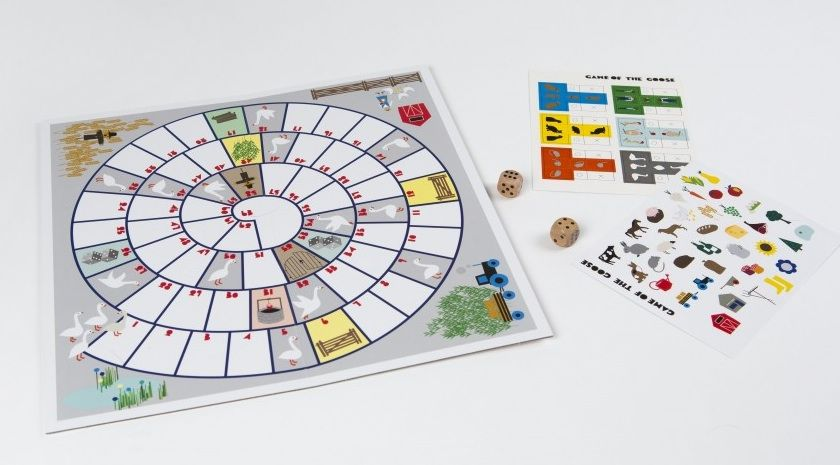
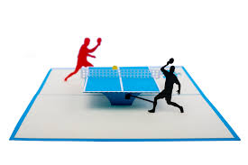
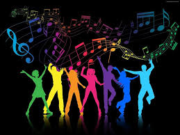

My name is Stana Elena Bianca. I am 26 years old. I was borned in Curtea de Arges and I live in Bucharest from 7 years. From a very young age I have understood the importance of good education. Early into my education experience I strived to bring home good results on school and every time I managed to be among the best. I am a hard working person and I realised that for me to achieve my personal best became a priority and a natural habit.
By beeing motivated to work hard, when I was in highschool I developed a sense of leadership by leading my handball team, and every day I feel like I could be a good leader for any team.
The qualities that best represents me in life is fairness and ambition. When I want to achieve something I can work long hours to have the best results.
I can admit that some of my defects are the perfectionism and self-criticism. Sometimes I forget that there are certain limits in certain uncontrollable situations.
Some of my hobbies
Personal development is one of the most important goals in my life. My favourite book is Blink - Malcom Gladwell but many other personal development books guide me to a better version of myself.

When I want to relax with friends, board games are the best option. Activity is my favourite board game.

Since I was little, I've been flirting with music. At the age of 10 I had my first contact with the stage, when I had to sing a song for my mother's day and I chose to go on with a few canto hours.For now is just a passion.
Beating boys at table tennis has become a goal for me. I like to play tenis and for me is a good relax.

I like to do sport. I like to go to gym for Zomba, I like to ride a bike and to play any games that involve teams.
